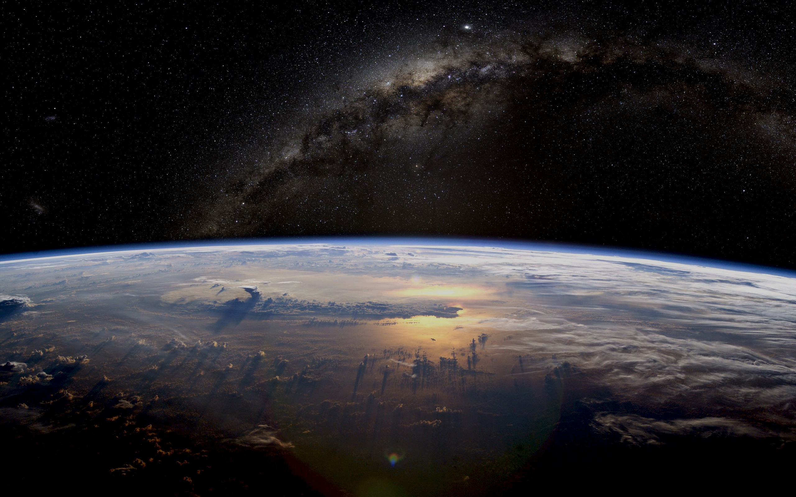

World Overload
Earth
Food Security
Relationships
Safety
Games

Climate Change
The earth's overall climate has been rapidly increasing due to the use of cardon dioxide by humans. So far earth is the one planet we are able to survive comfortably in. It has air, water, and food that we enjoy. If we don’t take care of it, in the future we won’t be able to live as comfortably. Climate changes such as global warming is not something you "believe in", the climate is changing as we speak. 20 million tons of ice per day are lost by only ONE of the glaciers in Greenland. The melted ice adds to the dangerous rise in sea levels. The amount lost per day is equal to the amount of water you and your Big Apple neighbors use for an entire year!
Deforestation
Removal of forests or trees, the land is later used for non-tree related purposes. Oxygen is a necessity for humans and many living creature. Every tree and plant release a gas called Oxygen. This means that trees are helping us breath in Oxygen. Did you know that today only about 3% of America's original rainforests remain. Although nearly half of the world's plant and animal species live in rainforests over 23 million acres of this land is destroyed each year, driving approximately 50,000 species to extinction every year. These satistics continue to decrease, unless you take action.
Biodiversity...or lack of
Problems discussed earlier such as Climate Change and Deforestation lead to the Loss of Biodiversity, the extinction of species worldwide including the local reduction or loss of species in a certain habitat. One might ask why does this matter to us? Each species, no matter it's size, play a versy important role in boosting ecosystem productivity. There is a complex food web, if plants and animals continue to go extinct at this rate, replacing it would cost us. Ironic how humans and human acitivity are the greatest treat to biodiversity but we depend directly on biodiversity for food, raw materials, medicines and a variety of other products. Over 12,000 species are treatened with extinction. One third of the world's coral reeds died off. A healthy biodiversity provides a number of natural services for everyone.